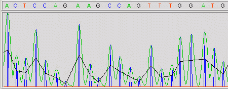
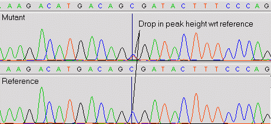
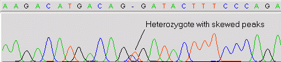

- Description
-
This module compares each input sequence chromatagram against a reference
chromatogram (or trace) to detect mutations. The reference traces are specified
in the
see section Reference Traces and Reference Sequences. Using
this method it is possible to detect both base-change mutations and heterozygous
mutations.
It works by aligning the reference trace with the input trace and then examining
the peak pairs for each individual base separately. It does not use basecalls as
these are prone to error and their use generates too many false positives. After
normalisation, the amplitude ratios of peak pairs which are abnormal are analysed
more closely. For heterozygotes, a drop in peak height with respect to the reference
of about 50% is expected. The final set of candidate mutations are validated against
a difference trace to ensure it contains a double peak at that location, thus
confirming the mutation to be real. After chromatagram analysis has been completed,
mutation tags are written back to the Experiment File as
HETE and MUTA
tags.
- Option: Adaptive Noise Floor
-
Traces are very noisy difficult to process signals. To find valid peaks in a trace
an adaptive noise threshold based on envelope height is used to eliminate all low
level noise from consideration. The effect of this parameter can be seen in the
trace below. By default this parameter is set to 25% of envelope peak height.
If set lower, too much noise is picked up; if set higher, low level mutations may
be missed.

- Option: Upper and Lower Peak Drop Thresholds
-
For heterozygote mutations, the peak height of the mutant drops by 50% with respect
to the normalised reference trace as shown in the trace below. For accurate detection,
we use this information to validate potential mutations. Due to overzealous preprocessing
done by sequencing machine software, the peak height drops are often not 50%, but
typically hover between 20% and 70% of reference peak height. Any potential heterozygote
whose peak height drop with respect to the normalised reference trace that lies within
this range is considered to be a real mutation.

- Option: Peak Alignment Search Window Size
-
In an ideal world, heterozygote peaks in a trace would be perfectly aligned on top of
each other. In practice however, they can often be skewed due to gel chemistry problems
or inaccurate mobility correction as shown in the trace below. When mutscan looks
for peak pairs, it allows for this skew by looking either side of the current position
for nearby peaks. This parameter is the distance mutscan looks in bases around each
candidate position.

- Option: Heterozygote SNR Threshold
-
For a normal trace containing normal bases, the signal-to-noise ratio (SNR) is the
ratio of the highest base peak to the second highest trace level. Mutscan computes
this value in decibels (dB) as 20*log10(S/N). For normal bases, this usually in
the region of 20-30dB or higher. However, for heterozygotes, the SNR as defined
by this measure degrades significantly to around 2-5dB. This is the mechanism
mutscan uses to accurately determine the mutation tag type. If the candidate
mutation's SNR is equal to or below this threshold, mutscan designates it to be
heterozygous, otherwise it's considered to be a normal base-change mutation.
- Option: Trace Alignment Failure Threshold
-
Mutscan works by aligning a mutant trace against a reference trace and comparing
the peaks. However, if the traces are too different, the alignment may fail and
as a consequence, large numbers of false positive mutation tags are generated.
Typically, within each trace there are only one or two mutations, so if we find
15 mutations, then we can confidently predict that things have gone badly wrong!
This parameter sets a threshold, beyond which an alignment failure error message
is printed, rather than outputting large numbers of invalid mutation tags.
- Option: Complement Bases on Reverse Strand Tags
-
After mutation detection and after readings have been assembled into a GAP4
database, GAP4 displays both forward and reverse readings in a single direction
in the contig editor. This makes it much easier to compare sequences and traces
in both directions simultaneously. When the corresponding traces are displayed,
any reverse strand traces are complemented automatically such that the bases are
interchanged. In this case, the original mutation tag generated by mutscan will
then be of the wrong sense. If checked, this option complements the tag base
labels to match the complemented trace displayed by GAP4.
Last generated on 25 April 2016.